Costiera
355.
"Senti la rotta. Domina l'onda. Vinci d'istinto."

"Senti la rotta. Domina l'onda. Vinci d'istinto."
Una barca propria da vendere sul mercato americano. Comunicazione luxury, elevata, aspirazionale.
Costruzione su commissione per un cliente privato. Comunicazione sportiva, tecnica, emozionale.
Il pubblico segue la costruzione della Costiera 355 in tempo reale. Ogni milestone del cantiere è un episodio. Novembre è il finale.
"Senti la rotta. Domina l'onda. Vinci d'istinto."
La nostra prima imbarcazione a vela nasce per una sola missione: competere e vincere, con emozione pura.
Progettata fin dall'origine per la classe ORC, è una macchina da regata che trasforma ogni miglio in adrenalina. È il momento in cui agganci l'onda, la barca accelera, il timone vibra vivo tra le mani e tutto diventa istinto: traiettoria perfetta, velocità piena, controllo assoluto. È quel passaggio alla boa in cui ogni gesto è naturale, preciso, inevitabile.
Pensata per lunghe regate, dà il massimo in equipaggio ma esprime la sua vera essenza nella conduzione in doppio, dove sintonia, ergonomia e sensibilità fanno la differenza. Il timoniere è al centro: posizione dominante, visibilità totale, feeling diretto con la barca e con il mare.
Il bompresso retrattile libera potenza quando serve, mentre la coperta è disegnata per manovre rapide, pulite, istintive: tutto è dove deve essere, tutto risponde senza esitazioni.
Sottocoperta, la funzione incontra la libertà: layout personalizzabile, interni strutturali, essenziali e intelligenti, progettati per adattarsi senza mai compromettere la performance.
La costruzione è senza compromessi: scafo, coperta e paratie in infusione, ragno strutturale in metallo, timone e asse in carbonio, deriva in composito e piombo. Rigidità, leggerezza e affidabilità si fondono per un unico obiettivo: portarti sempre oltre.
Buyer persona in definizione · I profili 01–03 sono il target primario
Profili secondari · Ancora in valutazione
La costruzione episodio per episodio. Ogni fase del cantiere è un contenuto.
Con i progettisti Cossutti Ganz. Materiali, scelte costruttive, rating ORC.
Interviste a Jesper. L'emozione del racing, la vita in barca, il senso di tutto.
Il cantiere, i costruttori, il team. La storia umana di un progetto a mano.
Render, luce, acqua. La barca finita come contrappunto visivo alla costruzione.
Articoli lunghi per sito e social. Approfondimenti tecnici e narrativi.
Shooting cantiere. Si raccoglie tutto. Nessuna pressione di pubblicare subito.
I social tornano vivi. 1-2 post a settimana. Qualità sopra quantità.
Serie episodica, video cinematografici, coinvolgimento community velica.
Barca fuori dal capannone. Intensità massima. Outreach media.
Video hero completo. Live dal varo. Post coordinato su tutti i canali.
Visual storytelling principale. Render, BTS cantiere, Reel cinematografici. Cuore dell'identità Costiera 355.
Versione raw e dinamica. Video di processo, quickcuts cantiere, formati verticali. Comunità giovane e appassionata.
Comunicazione professionale. Cantiere, partner, buyer, media. Posizionamento come eccellenza italiana nel racing.
Social + press + Google Maps — tutto lo stesso giorno.
23-24 giugno, 30 giugno, luglio — infusione scafo e costruzione.
Bio, immagine profilo, cover su Instagram, TikTok, LinkedIn.
Barche a motore (CY39) + barche a vela (Costiera 355).
Naming ufficiale linea. Primo mese di storytelling pianificato.
Un secondo modello sportivo a vela in fase di valutazione. Se confermato, da settembre il cantiere avrebbe tre modelli: CY39 (motore), Costiera 355, Costiera 305.
In valutazioneStiamo costruendo un team dedicato all'insegnamento della vela sportiva ai clienti che richiedono il servizio. Un'offerta che rafforza il rapporto con il buyer e posiziona Costiera come ecosistema completo — non solo cantiere.
In formazioneBarca a vela da competizione.
ORC Racing · Costruzione su commissione.
Lo yacht a motore di Costiera.
Eleganza · Performance · Comfort.
Costiera Yacht · Piano di Lancio Social · 2026